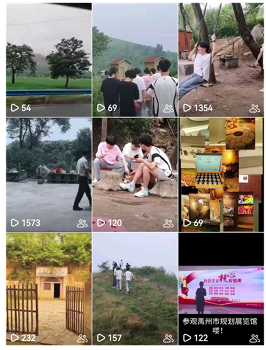
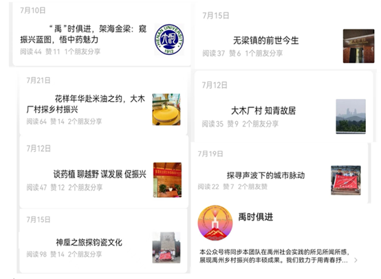
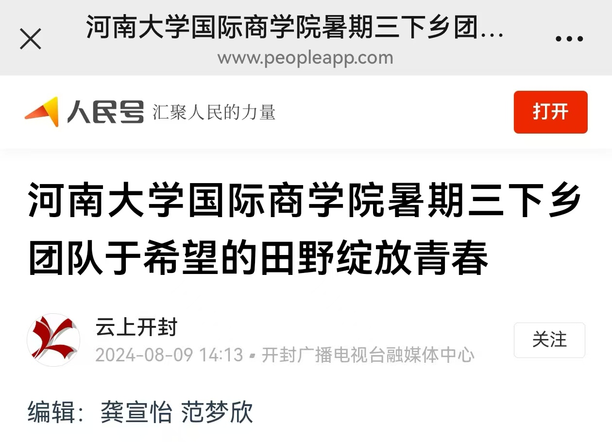
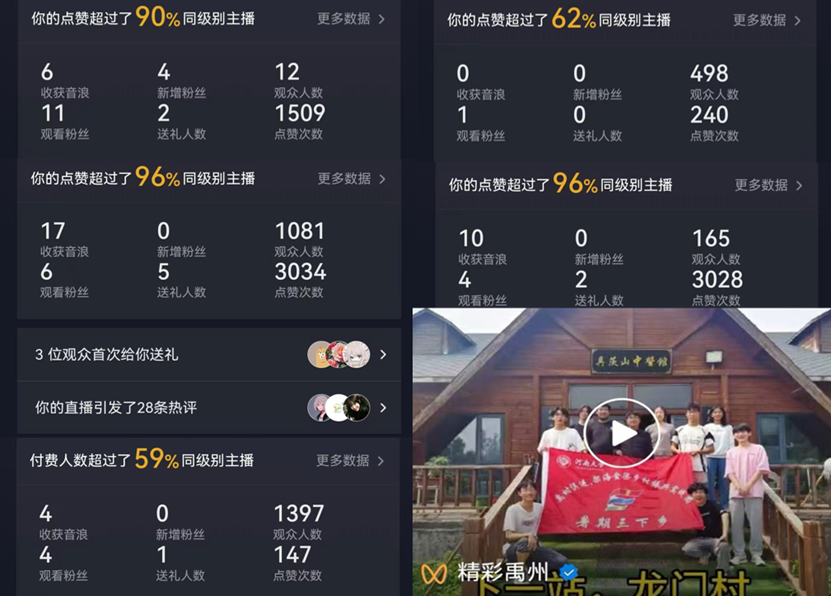
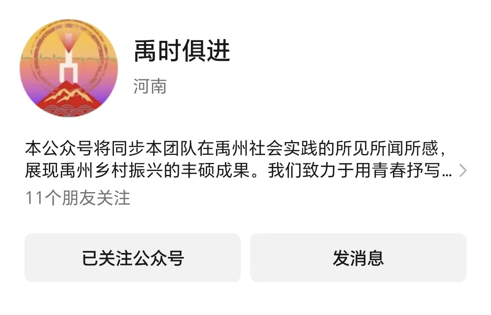
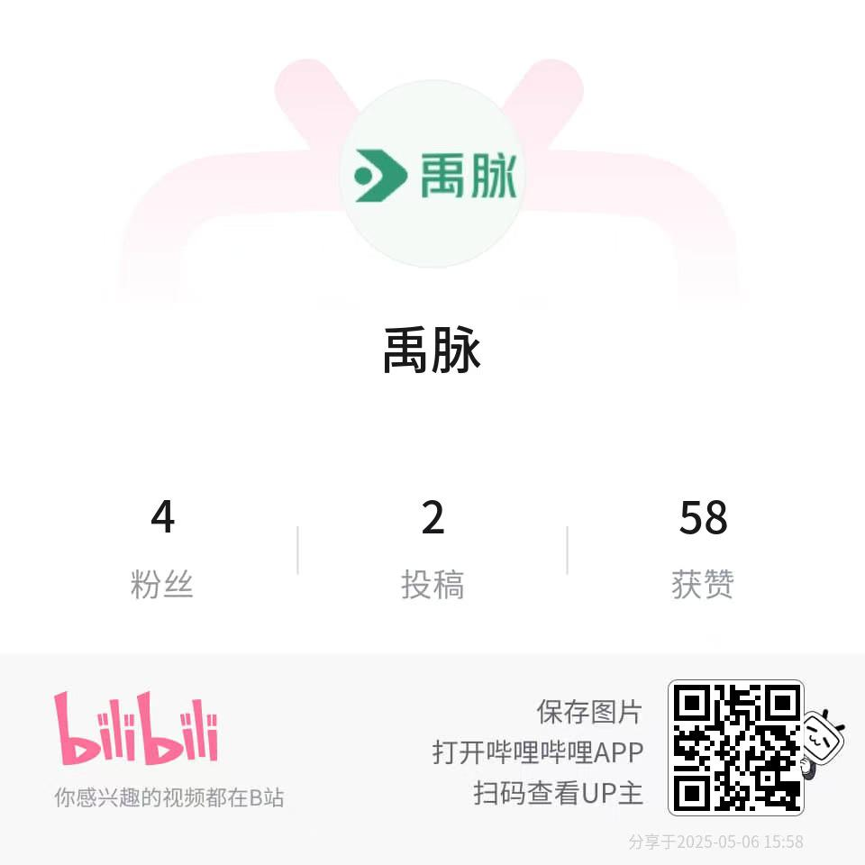
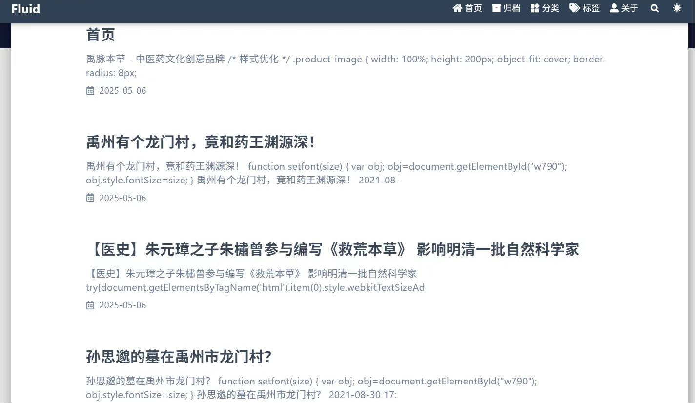
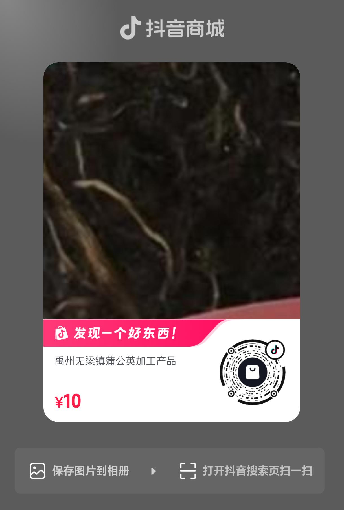
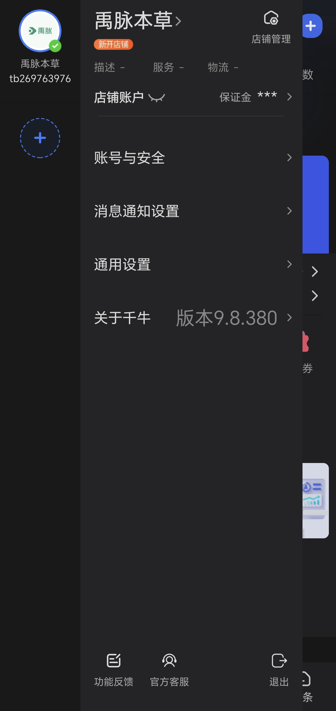
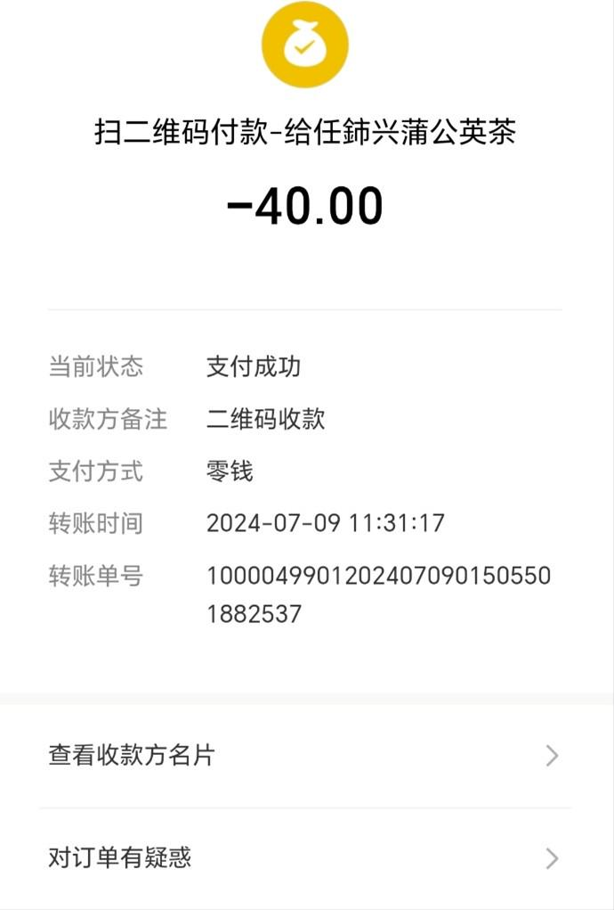

媒体宣传成果概览
200万+
累计触达青年群体
17部
原创视频作品
国家级平台
推文登上人民日报
媒体宣传历程
2023
视频传播启动
团队开始制作中医药文化短视频，在抖音、B站等平台发布，累计制作17部视频，触达青年群体超200万人。

2024
公众号创建
创建"禹时俱进"公众号，发布推文总浏览量达350余次，成为项目重要宣传阵地。

2024
官方关注
2024年实地调查时视频被禹州市"精彩禹州"官方视频号报道，获得地方政府认可。
2024
国家级平台报道
团队撰写的推文被"人民日报"人民号推送，项目影响力提升至国家级平台。

2025
全媒体矩阵
形成抖音、B站、公众号、官网、电商平台全媒体矩阵，新媒体传播成效显著。
各平台宣传成果
抖音平台
- 发布多个视频，总浏览量达5000余次
- 多次通过抖音直播间宣传禹州情况
- 观众人数达3000余次
- 开设抖音商城，上架产品

微信公众号
- 创建"禹时俱进"公众号
- 发布多篇推文，总浏览量达350余次
- 推文登上"人民日报"人民号
- 成为项目重要宣传阵地

B站平台
- 制作宣传视频，展示中药材制作过程
- 分享幕后故事、从业大师介绍
- 提高在青年群体中的曝光度
- 培养粉丝群，鼓励用户互动

官方网站
- 建立官方网站，助推文化传播
- 通过SEO优化和网络营销吸引客户
- 提高企业知名度和品牌形象
- 网址：https://zzy-swimming-github-io.pages.dev/

电商平台
- 在淘宝、抖音商城等平台开设店铺
- 扩大品牌影响力和产品销售渠道
- 助力农民增收，带动禹州中药材销售
- 搭建覆盖禹州周边地市的电商服务站


官方媒体
- 实地调研视频被禹州市"精彩禹州"官方视频号报道
- 推文被"人民日报"人民号推送
- 获得地方政府关注和支持
- 提升项目公信力和影响力
媒体宣传图片展示
公众号推文总浏览量达350余次
抖音直播观众人数达3000余次

电商销售助力群众致富
实地调研获官方关注
自建网站提高企业知名度
B站平台传播中医药文化
媒体宣传效果总结
传播成效显著
"禹脉本草"项目通过多平台媒体宣传，累计制作视频17部，触达青年群体超200万人。公众号推文总浏览量达350余次，抖音视频总浏览量达5000余次，直播观众人数达3000余次。推文登上"人民日报"人民号国家级平台，实地调研视频被禹州市"精彩禹州"官方视频号报道。
品牌影响力提升
通过全媒体矩阵传播，"禹脉本草"品牌知名度显著提升，获得地方政府关注和支持。项目公信力和影响力不断增强，为禹州中医药文化的传承与创新提供了有力支持。
未来规划
未来，"禹脉本草"项目将继续深化与各大媒体平台的合作，扩大宣传覆盖面，提升品牌影响力。计划通过更多优质内容的创作和传播，进一步推动禹州中医药文化的传承与创新，助力乡村振兴战略实施。